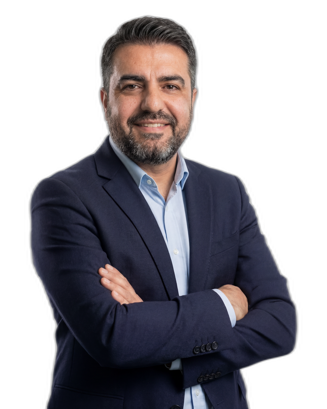
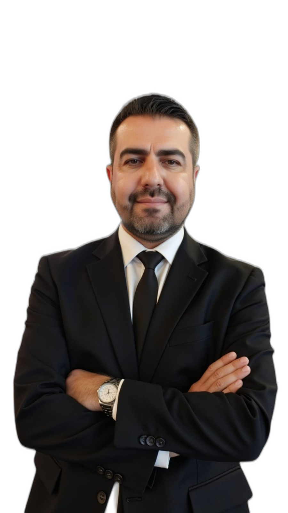

"Bir gazetecinin kalemi, bir danışmanın vizyonu; ekonomi, teknoloji ve stratejiyi geleceğin yönetiminde buluşturuyorum."

On yıldır iş dünyasının en çok tekrarladığı "yetenek savaşı" söylemini masaya yatırıyor; şirketlerin parlak mühendisleri piyasanın altında maaşla ikna etme pratiğini, "stratejik yetenek yatırımı" etiketinin ardındaki gerçeği — kullan-at insan politikasının yumuşatılmış halini — keskin bir dille sorguluyor.
Çalışan Değeri · Şirket PolitikasıDijital çağda ölümün artık "yok olma haysiyeti" olmadığını anlatıyor: her mesaj, her fotoğraf, her arama, okyanus ötesindeki sunucularda birikerek senin adınla ticaret yapan, çürümeyen bir dijital kadavra inşa ediyor. Verinin küresel sermayenin en tekinsiz kölelik pazarına dönüştüğünü felsefi bir derinlikle irdeleyen edebi bir deneme.
Dijital Miras · Veri EtiğiMaslak'ın cam kulelerinden küresel ticaretin gölgeli dinamiklerine uzanan bir analiz: modern ticaretin, veri akışları ve stratejik hamlelerle nasıl bir istihbarat operasyonu görünümüne büründüğünü, kurumsal karar mekanizmaları üzerinden inceliyor.
Ticaret · Veri İstihbaratıTürk ihracatının Almanya'ya bağımlılığını Bursa'da bir ustabaşıyla kurduğu diyalogdan yola çıkarak anlatıyor: Avrupa'nın motoru her yavaşladığında en uçtaki vagon biz sallanıyoruz. On beş yıldır aynı senaryoyu gördüğümüze göre bunun artık bir politika eksikliği değil, kolektif bir tercih olduğunu savunuyor.
İhracat · Tedarik ZinciriToplantı odalarının beyaz ışığı altında "dayanıklılık" (resilience) söylemleri ile gerçek arasındaki mesafeyi inceliyor; İK direktörlerinin broşürlerle sunduğu dayanıklılık eğitimlerinin, aslında kırılmayı bir lüks sayan kurum kültürünü nasıl sürdürdüğünü sorguluyor.
Dayanıklılık · Kurum KültürüEkonomi, teknoloji ve strateji üzerine özgün analizler.
İşletmelerde verimlilik artırma ve süreç iyileştirme.
Medya ve kurumlara yapay zekâ destekli içerik eğitimleri.
Hızlı tüketim malları ve satış ekiplerinde operasyonel verimlilik, fiyat-gelir optimizasyonu ve yapay zekâ destekli karar sistemleri.
Panel, söyleşi ve strateji konuşmalarına katılım.
Kurumsal içerik ve dijital medya stratejileri.
TİMBİR Akademi'nin düzenlediği ücretsiz çevrim içi eğitimde, gazetecilikte yapay zekânın temel ve ileri düzey uygulamaları; Gelecek Yönetim Gazetesi İmtiyaz Sahibi ve Dijital Dönüşüm & Verimlilik Danışmanı Erim Onan tarafından aktarıldı.
Ajans Urfa'nın gündem haberinde, TİMBİR Akademi'nin basın mensuplarına yönelik yapay zekâ eğitiminde Erim Onan'ın eğitmen olarak yer aldığı, medya sektöründe dijital dönüşümün önemi vurgulandı.
Doğu Gazetesi haberinde, Erim Onan'ın uluslararası firmalardaki yöneticilik tecrübesini ve yapay zekâ entegrasyonu bilgisini basın mensuplarıyla paylaşacağı; verimlilik artırma stratejilerine odaklanacağı aktarıldı.
Özgün Medya Ajansı'nın kapsamlı haberinde Erim Onan'ın Unilever ve La Lorraine gibi uluslararası firmalarda yöneticilik yaptığı; günümüzde işletmelere yapay zekâ destekli satış, operasyon ve stratejik yönetim danışmanlığı sunduğu detaylı olarak aktarıldı.

Kariyerim, Tekirdağ'ın sokaklarında liseli bir gencin donmuş ellerinde gazete dağıtmasıyla başladı. O günlerde, köşe yazarlarının satırlarında saklı bilgelikten ilham aldım. Yıllar sonra, 25 yıllık beyaz yakalı profesyonel kariyerimin ardından, o çocukluk hayalini gerçekleştirerek Gelecek Yönetim Gazetesi'nin temellerini attım.
Bugün, 23 yılı aşkın satış ve operasyon yönetimi deneyimimle, uluslararası firmalardaki yöneticilik tecrübemi, yapay zekâ entegrasyonunu ve verimlilik stratejilerini birleştirerek işletmelere dijital dönüşüm yolunda rehberlik ediyorum. Çukurova Üniversitesi eğitimim ve Indigonix System Intelligence'ta Partner – Commercial Transformation & FMCG Lead olarak yürüttüğüm çalışmalar, bu birikimi kurumsal dönüşüm projelerine taşıyor.
Medya profesyonellerine yapay zekâ destekli içerik üretimi eğitimleri veriyor, TİMBİR Akademi'de eğitmenlik yapıyorum. Hızlı tüketim malları (FMCG) ve satış ekiplerinde operasyonel verimlilik, fiyat-gelir optimizasyonu ve yapay zekâ ile karar destek sistemleri üzerine kurumlara danışmanlık sağlıyorum.
Köşe yazılarım ve danışmanlıklarımla ekonomi, teknoloji, strateji ve gelecek vizyonu alanlarında katma değer üretiyorum. Bugünü anlamak yetinmez; amacım, bugünün verilerini yarının stratejisine dönüştürmek.
Liseli yıllarında donmuş ellerinde gazetelerle köşe yazarlarının bilgeliğini keşfetti; gazetecilik tutkusu burada filizlendi.
Satış ve operasyon yönetiminde, uluslararası firmalarda yöneticilik deneyimi kazandı. Çukurova Üniversitesi'nde temellenen akademik birikim, kurumsal hayatta pratiğe dönüştü.
Çocukluk hayalini gerçekleştirerek gazetenin temellerini attı, vizyoner yazarlarla yola çıktı. Bugünü anlamak, yarını yönetmek misyonuyla yayın hayatını sürdürüyor.
Partner – Commercial Transformation & FMCG Lead olarak hızlı tüketim malları sektöründe ticari dönüşüm ve yapay zekâ destekli verimlilik projelerini yönetiyor.
TİMBİR Akademi'de yapay zekâ destekli içerik üretimi eğitimleri veriyor; köşe yazıları ve kurumsal danışmanlıklarla medyaya ve iş dünyasına katma değer katıyor.